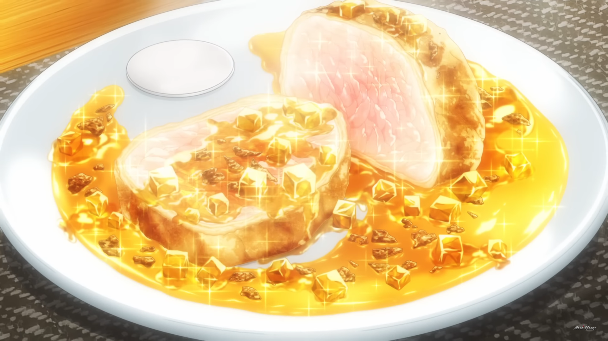

Le Plat Véritable ~Delinquent Daughter Style~

Description
It is the dish that Erina Nakiri made as a main course after Yukihira Souma's appetiser dish "Time Fuse, Brazen Youngster-Style Primeval Meat", helped spreading the delicous flavor to maximum , with the help of Soma Yukihira, to lead the Rebels into beating Central and winning the seats of the Elite Ten Council. It is essentially a dish made up of all the disgusting snacks, like squid and peanut butter, but used to make a delicious dish. She also used the furikage seasoning from Season 1 that Soma used to get into Totsuki.
Ingredients
- Skin
- Croûte
- Bread
- Pie
- Finely Minced Squid Tentacle
- Peanut Butter
- Scrambled Eggs
- Fresh Cream
- Salt
- Black Pepper
- Turmeric
- Boiled Rice
- Sesame Oil
- Salt
- Spear Squid
- Slowly Braised High-Grade Free-Range Chicken Breast
- Chicken wings
- Ginger
- Bonito stock
- Sake
- mirin
- Sugar
- Soy sauce
Steps
- Mix eggs, fresh cream, salt and butter.
- Stir the mixture in hot water until it has a thick texture and a bright yellow corlor like turmeric powder.
- Bake boiled rice with liquid in a thin layer of sesame oil to make crispy crackers.
- Bake chicken's inside meat till half-cooked and roast the chicken skin till it feels crispy.
- Combine 1 tablespoon of Grated ginger, 700 cc of Bonito broth, 1tp of Sake, mirin, sugar each and 50 cc of light Soy sauce togther.
- Heat sesame oil in frying pan and sauté chicken wings until golden brown on both sides
- Put items from (5) and (6) into a pot and turn on high until it boils. Skim scum off top, reduce heat to low, and simmer until broth level is reduced by half.
- Pour broth into a container to cool. Once cooled, place in refrigerator to chill and harden. Debone chicken wings and cut into strips.
- Once (8) hardens, remove from container and cut aspic into 1cm x 1cm squares.
- Mix bread crust with finely chooped squid tentacle and peanut butter, and swap the mixture around the chicken.
- pour the yellow sauce all around the plate and put the chicken meat on.
- Break crackers into tiny pieces and sprinkle it with aspic all over the chicken and walla~your juicy delicious Le Plat Veritable ~Delinquent Daughter Style~ has been finished.